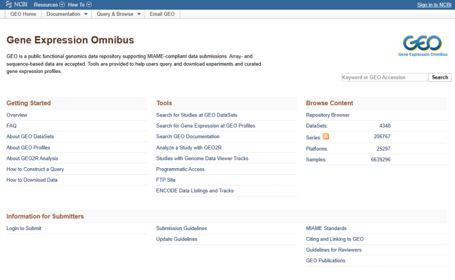

NCBI GEO Data Analysis
NCBI Gene Expression Omnibus(GEO)는 연구자들이 공개한 유전자 발현 데이터를 제공하는 데이터베이스입니다. 이 과정에서는 GEO 데이터 검색부터 다운로드, GEO2R 분석, R 기반 차등발현유전자(DEG) 분석, GO·KEGG 기능 분석과 STRING·Cytoscape 네트워크 분석까지 단계별로 학습합니다.
Hands-on tutorials for public gene expression data analysis using GEO, GEO2R, R and bioinformatics tools.
 Gene Expression Omnibus
Gene Expression Omnibus
Public Data
NCBI GEO의 실제 유전자 발현 데이터를 사용해 분석합니다.
Reproducible Analysis
R 분석 코드와 예제 데이터를 활용해 직접 실습합니다.
Step-by-step Tutorial
데이터 검색부터 통계 분석과 결과 해석까지 이어집니다.
Biological Interpretation
유전자 기능과 네트워크 결과를 해석하는 방법을 다룹니다.
Tutorial Workflow 실습 전체 흐름
첫 단계부터 시작하기실습 과정은 총 10단계(Step 00~09)로 구성되어 있습니다. 각 단계를 선택하면 해당 교육 페이지로 이동합니다.
R과 RStudio 설치
Windows에서 R과 RStudio를 설치하고 분석 환경을 준비합니다.
실습 보기 01 R 기초R 기초와 작업환경
RStudio 사용법, 프로젝트, 데이터프레임과 패키지 사용법을 익힙니다.
실습 보기 02 GEO 검색GEO 데이터 검색
NCBI GEO에서 공개 유전자 발현 데이터를 검색하고 GSE·GSM·GPL을 이해합니다.
실습 보기 03 데이터 선정데이터셋 선정
GSE 기록과 메타데이터를 확인하고 분석 가능한 비교군을 선정합니다.
실습 보기 04 GEO2RGEO2R 차등발현 분석
웹 기반 GEO2R에서 그룹을 설정하고 DEG 분석 결과를 읽습니다.
실습 보기 05 R 분석R 기반 DEG 분석
발현값·임상정보·유전자 주석을 정리하고 limma 결과를 GEO2R과 비교합니다.
실습 보기 06 기능 분석 기초GO·KEGG·PPI 분석 개요
GO·KEGG·PPI 분석의 목적과 ORA·GSEA의 차이를 이해합니다.
실습 보기 07 DAVIDDAVID GO·Pathway 분석
Up·Down DEG에서 과대표현된 생물학적 기능 및 경로를 탐색합니다.
실습 보기 08 STRINGSTRING 네트워크 분석
STRING에서 단백질 연관 네트워크와 기능 풍부도 결과를 확인합니다.
실습 보기 09 CytoscapeCytoscape 네트워크 분석
stringApp·MCODE·cytoHubba로 모듈과 hub gene 후보를 탐색합니다.
실습 보기Example Dataset
대장암(Colorectal cancer) 조직의 마이크로어레이 데이터를 이용해 GEO2R 및 R 기반 분석을 실습합니다.
30 samples GPL570 Microarray예제 데이터의 그룹 설정과 분석 방법은 Step 04~05에서 확인할 수 있습니다.
Learning Materials
Related Resources
공식 사이트의 화면이나 버전은 실습 자료와 다를 수 있습니다.